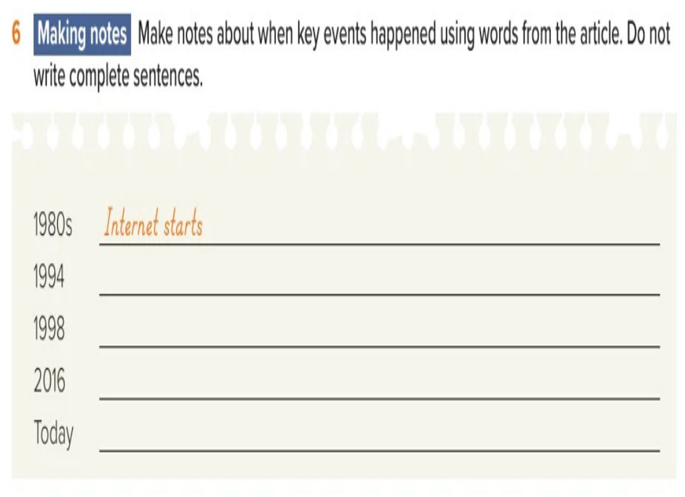
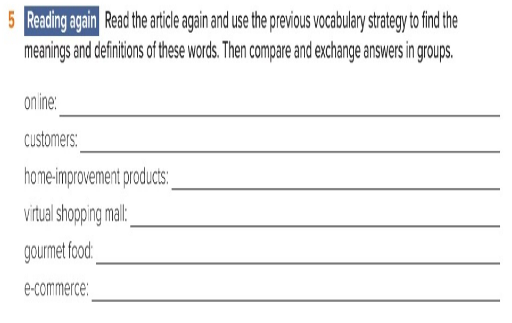

📚 Read quietly in ALEF Pathway → Library for 10 minutes while your teacher prepares the board. No questions yet.
Chapter 2 · Reading 1 · Part 2
Online Shopping · Part 2
Today I will learn to…
Use context clues to explain key vocabulary from the article.
Identify the main idea, supporting details, and new word meanings in paragraphs A–D.
Make brief notes, answer reading questions, and use irregular past-tense verbs correctly.
Key words
customersgarageclose downpredictiongourmethuge
📖 Open ALEF Pathway → Library. Read quietly for 10 minutes while your teacher prepares the board.
Starter · 3 minutes
Find the meaning in the sentence
Read each sentence. Which nearby words help you work out the bold word? Explain before revealing.
1. The customers bought shoes and paid at the counter.
People who buy things or use services.
2. Bezos started the company in a garage, a place where people usually keep cars.
A place where cars are kept or repaired.
3. The small shop had no customers, so it had to close down and stop selling.
Stop doing business.
4. Her prediction said the shop would be popular next year.
A guess about what will happen.
5. The restaurant served gourmet food made by an expert chef.
Special, high-quality food.
6. The mall was huge; it had hundreds of stores.
Very big.
Reading · paragraph A · 4 minutes
Paragraph A
Read aloud with the teacher. Watch how we choose the main idea and evidence.
A It’s hard to imagine life without the Internet today. In fact, the Internet is such a huge part of our lives that we forget that this wasn’t always so. When it started in the 1980s, only scientists and people in the government knew about the Internet and how to use it. Now, most of us spend hours and hours online (on the Internet) every day. We do it for entertainment, to find information, to communicate with others, and to buy things we want or need.
Notebook task · paragraph A
Main idea: one sentence.
Main idea: The Internet grew from something few people knew about to a central part of everyday life.
Two details from the text.
Details: In the 1980s only scientists and government workers knew how to use it; now people use it for entertainment, information, communication and shopping.
One new word and how you know its meaning.
Word: online = on the Internet. The parentheses explain it.
Reading · paragraph B · 20 minutes · B–D
Paragraph B
Read this paragraph yourself. In your notebook, write its main idea, two details and one new word with its meaning. This is part of the 20-minute independent reading task.
B Amazon.com was one of the first companies to try to sell products on the Internet. Jeff Bezos started the company in 1994. One day, he made a prediction about the future. He saw that the World Wide Web was growing at a rate of 2,000 percent a year. He predicted that it was going to continue to grow, and he thought that shopping was going to move to the Internet. People were going to shop online. He left his good job and drove across the country to Seattle, Washington. There he started an online bookstore called Amazon.com. Bezos had very little money. The company began in a garage, and at first there were very few customers (people who buy things).
Notebook task · paragraph B
Main idea: one sentence.
Main idea: Jeff Bezos predicted Internet shopping would grow and started Amazon as an online bookstore.
Two details from the text.
Details: He started in 1994; Amazon began in a garage with very little money and few customers.
One new word and how you know its meaning.
Word: customers = people who buy things. The parentheses explain it.
Reading · paragraph C · 20 minutes · B–D
Paragraph C
Read this paragraph yourself. In your notebook, write its main idea, two details and one new word with its meaning. This is part of the 20-minute independent reading task.
C At the Amazon.com site, people could search for a book about a subject, find many different books about that subject, read what other people thought about the books, order them by credit card, and get them in the mail in just a few days. This kind of bookstore was a new idea, but the business grew. Four years after it started, Amazon began to sell music, too. Almost 20 years later, in 2016, Amazon.com had 310 million customers and sold more than 300 million different items in categories including books, CDs, toys, electronics, videos, DVDs, home-improvement products (things that you use to fix up a house), software, and video games. Today, at a “virtual shopping mall” – a group of online stores – you can buy anything from gourmet food – special, usually expensive, food – to vacations.
Notebook task · paragraph C
Main idea: one sentence.
Main idea: Amazon grew from a new online bookstore into a large online shopping site.
Two details from the text.
Details: It began selling music four years later; in 2016 it had 310 million customers and sold more than 300 million items.
One new word and how you know its meaning.
Word: virtual shopping mall = a group of online stores. A dash gives the meaning.
Reading · paragraph D · 20 minutes · B–D
Paragraph D
Read this paragraph yourself. In your notebook, write its main idea, two details and one new word with its meaning. This is part of the 20-minute independent reading task.
D When internet shopping started all those years ago, many people said, “Online shopping is crazy. Nobody can make money in an online company.” They were wrong. Today, Jeff Bezos is a billionaire and e-commerce (buying and selling on the Internet) is here to stay. More than 10 percent of products are sold online now. Some people predict that this will grow. But what will happen to real shops: the ones in malls and on the street? Will they still make a profit in the future, or will they all close down? Nobody knows, but we’ll soon find out.
Notebook task · paragraph D
Main idea: one sentence.
Main idea: Online shopping succeeded despite doubts, while the future of physical shops is uncertain.
Two details from the text.
Details: More than 10 percent of products are sold online; the article asks whether real shops will still make a profit.
One new word and how you know its meaning.
Word: e-commerce = buying and selling on the Internet. The parentheses explain it.
Activity 6 · page 26 · notebook
When did it happen?
Write short notes in your notebook. Then reveal them on the book page one by one. The 1980s example is already filled in.

Amazon.com startsAmazon sells music310 million customersOnline malls sell almost anything
Activity 5 · page 27 · notebook
Reread and find the meanings
Reread the article. Write each meaning in your notebook, then reveal it on the textbook line.

on the Internetpeople who buy thingsthings used to fix up a housea group of online storesspecial, expensive foodbuying and selling online
Activity 8 · page 28 · Exit Ticket
Complete the verbs
Complete the sentences in your notebook. Reveal each missing verb directly on the textbook picture. Number 1 is already done.